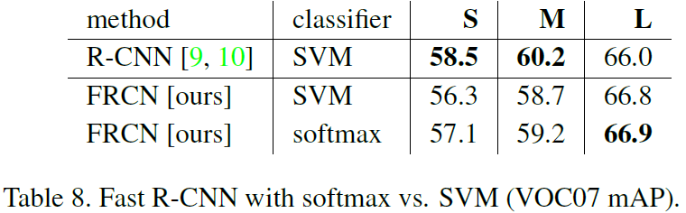

Fast R-CNN——RCNN系列算法Ⅱ
前言
Fast R-CNN在VOC-07数据集上将检测精度mAP从58.5%提高到70.0%，检测速度比R-CNN提高了200倍。
从论文页数来看，Fast R-CNN仅9页，与R-CNN的21页相比，也“精简”了不少。
论文与源码
代码：rbgirshick/fast-rcnn: Fast R-CNN (github.com)
Girshick_Fast_R-CNN_ICCV_2015_paper下载
摘要
从摘要可以看出，Fast R-CNN采用了几项创新技术来提升训练与测试的速度和精度，与R-CNN相比，Fast R-CNN采用更深的VGG16，但训练速度快了9倍，测试速度快了213倍，并且获得了更高的均值平均精度（Mean Average Precision）。
结论
Fast R-CNN是在R-CNN 和 SPPnet基础上进行升级的，并且提出“稀疏目标的建议似乎可以提高探测器的质量”。
介绍
作者认为前期的相关工作存在缓慢和不优雅的问题，主要原因是需要对对象（objects）进行精确定位。由此产生的两种挑战：① 必须处理许多候选对象位置（通常称为“提议”）；② 这些候选者只提供粗略的定位，必须对其进行细化才能实现精确定位。 这些问题的解决方案通常会损害速度、准确性或简单性。
论文中提出一个单阶段训练算法，联合学习来分类目标建议和精化它们的空间位置。
R-CNN与SPPnet
R-CNN的问题
- 训练是多阶段管道
- 训练在时间和空间都很昂贵
- 目标检测很慢
R-CNN速度较慢，因为它对每个对象建议执行ConvNet正向传递，而不共享计算。
SPPnets（Spatial pyramid pooling networks）的优化与问题
SPPnets通过共享计算来加速R-CNN。SPPnet方法计算整个输入图像的卷积特征图，然后使用从共享特征图提取的特征向量对每个对象提议进行分类。通过将提议内的特征映射的部分最大池化为固定大小的输出（例如，6 × 6）。多个输出大小被合并，然后如空间金字塔式合并中那样级联。
SPPnets也是多阶段流水线，并且其非常深的网络的准确性由于微调算法不能更新空间金字塔池化之前的卷积层而收到限制。
贡献
相较与前两者工作，Fast R-CNN弥补了R-CNN和SPPnet的不足，同时提高了它们的速度和精度。
其优点如下：
- 检测质量（mAP）高于R-CNN、SPPnet
- 训练是单阶段的，采用多任务损失
- 训练可以更新所有网络层
- 特征缓存不需要磁盘存储
结构与训练过程
① 用多个卷积层和最大池化层对整个图像进行处理，生成卷积特征映射；
② 对于每个对象建议。感兴趣区域（RoI）池化层从特征映射中提取固定长度的特征向量；
③ 每个特征向量输入到一个全连接层，最终分为两个兄弟层输出，一个是softmax，另一个是K个对象类中的每一个输出4个实数值，每组4个值即为对应的边框位置。
RoI池化层
使用最大池化，将任一RoI转化为固定H×W。
每个RoI是由四个参数(r, c, h, w)确定，其中(r, c)确定了左上角的位置，(h, w)确定了图像的尺度。

RoI最大池化的工作是把h×w大小的RoI窗口划分成多个H×W大小的子窗口，显然，划分的子窗口个数应该是(h/H)×(w/W)。池化作用在每一个特征映射通道中，就和标准的最大池化是一样的。RoI层可以认为是金字塔池层的特例，其中只有一个金字塔级别。
从预训练网络中初始化
文中使用了三个预训练的ImageNet 网络，每个网络都有5个最大池化层，以及5-13个卷积层。预训练经过三个变化：
- 最后的最大池化层被RoI池化层代替，RoI池化层通过将H和W设置为与网络的第一全连接层兼容而配置（例如，对于VGG16，H = W = 7）。
- 网络的最后一个全连接层和softmax（其被训练用于1000路ImageNet分类）被替换为先前描述的两个兄弟层。
- 网络被修改为采用两个数据输入：图像列表和这些图像中的RoI列表。
检测微调
利用反向传播算法训练网络权值。
SPPnet无法更新空间金字塔池层以下的权重的原因：当每个训练样本（即RoI）来自不同的图像时，通过SPP层的反向传播是非常低效的。每个RoI可以具有非常大的感受野，通常跨越整个输入图像。由于前向传递必须处理整个感受野，所以训练输入很大（通常是整个图像）。
提出了一种更有效的训练方法：训练过程特征共享。随机梯度下降（SGD）小批次倍分层采样，首先采样N个图像，然后通过从每个图像采样R/N个ROI。关键的是，来自同一图像的ROI在向前和向后传递中共享计算和存储器。使N变小可以减少小型批处理计算。
e.g. 当使用N = 2和R = 128时，所提出的训练方案比从128个不同图像中采样一个RoI大约快64倍
要注意可能会导致训练收敛缓慢。
与R-CNN不同的是，Fast R-CNN没有使用三个单独训练的softmax分类器、SVM和回归器，而是使用了一个精简的训练过程。其中一个微调阶段联合优化了softmax分类器和检测框回归器。
多任务损失
Fast R-CNN有两个输出，① K+1类离散概率输出 t^{k}=\left(t{\mathrm{x}}^{k}, t{\mathrm{y}}^{k}, t{\mathrm{w}}^{k}, t{\mathrm{h}}^{k}\right) $$，其中$t^{k}$指定相对于对象建议的尺度不变平移和对数空间高度/宽度移位。

针对RoI标记的真实类（ground-truth class）u以及真实边框回归目标（ground-truth bounding-box regression target）v，提出一个多任务损失L进行联合训练：
$L\left(p, u, t^{u}, v\right) = L{\mathrm{cls}}(p, u)+\lambda[u \geq 1] L{\mathrm{loc}}\left(t^{u}, v\right)$
其中$L{\mathrm{cls}}(p, u)=-\log p{u}$是真实类u的对数损失。
第二个任务损失$Lloc$定义在类u真实的边框回归目标上，$v=(v{\mathrm{x}}, v{\mathrm{y}}, v{\mathrm{W}}, v{\mathrm{h}})$。而预测结果为$t^{u}=\left(t{\mathrm{x}}^{u}, t{\mathrm{y}}^{u}, t{\mathrm{w}}^{u}, t_{\mathrm{h}}^{u}\right)$。
Iverson 括号指示函数[u≥1]，当 u≥1 的时候值为 1，否则为 0。按照惯例，任何背景类标记为u=0。对于背景 RoI，没有检测框真值的概念，因此$L_loc$被忽略。
对于检测框回归，我们使用损失：
其中：
$smooth{L_1}(x)$是一个健壮的（robust）$L_1$损失，相较于R-CNN和SPPnet使用的$L_2$损失更不敏感。当回归目标是无界的时，具有$L_2$损失的训练可能需要仔细调整学习速率以防止梯度爆炸，而上述的$smooth{L_1}(x)$式子则消除了这一敏感性。
$L\left(p, u, t^{u}, v\right)$式中的$\lambda$是用来控制两个任务损失之间的平衡，原论文的实验中$\lambda$均取1。
OverFeat、R-CNN 和SPPnet也训练分类器和边界框定位器，但它们使用的是分阶段训练，这对于Fast R-CNN来说不是最优的。
小批量采样
在微调期间，SGD小批量由N=2图像中构造。
使用R=128的mini-batches，采用64个RoI。选取25%的RoI，这些与真实的边界框定位器的IoU至少是0.5。这些RoI包括标记有前景对象类的示例，即u≥1。 剩下的RoI是从具有最大IoU的目标提案中取样的，其真实值在[0.1,0.5)区间内。背景示例，标记为u=0。
通过RoI池化层进行反向传播
假设每次只处理一张图像。
令$xi\in \mathbb{R}$是第i个RoI池化层的激活输入，$y{rj}$是从第r个RoI的第j个输出。$y{rj}=x{i^*(r,j)}$，其中
$\mathcal{R}(r, j)$是输出单元 $y{rj}$最大池化的子窗口中的输入的索引集合。一个 $x_i$可以被分配给几个不同的输出 $y{rj}$。
RoI 池化层反向传播函数通过遵循 argmax switches 来计算关于每个输入变量 $x_i$的损失函数的偏导数：
即对于每个RoI 的r和每个池化输出的$y{rj}$，如果i是通过最大池化选择的argmax，则偏导数$\frac{\partial L}{\partial y{r j}}$被累加。偏导数在反向传播过程中已经被计算。
随机梯度下降（SGD）超参数
| 参数名 | 值 |
|---|---|
| 零均值高斯分布初始化，选用标准差 | softmax分类：0.01 边界框回归:0.001 |
| bias初始化 | 0 |
| 全局学习率（learning rate） | 0.001 |
| 每层学习率 | 1倍的全局学习率，0.001 |
| 偏置（bias） | 2倍的全局学习率，0.002 |
| 动量（momentum） | 0.9 |
| （权重与偏置上的）参数衰减（parameter decay） | 0.0005 |
30k次小批量 SGD迭代，然后将学习率降低到 0.0001，再训练 10k次迭代。
尺度不变性
两种方式进行
- 暴力进行（“brute force”）
- 图像金字塔
Fast R-CNN检测
Fast R-CNN微调之后，检测量就仅是运行一个正向传播。
网络将图像和R（通常为2000左右）个提议区域（a list of R object proposals）传入，当使用图像金字塔时，每个RoI被分配到比例，使得缩放后的RoI最接近区域中的2242个像素。
对于每个测试RoI的r，前向传播输出一类的后验概率分布p和一组相对于r的预测边界框偏移量。使用估计概率$\operatorname{Pr}(\text { class }=k \mid r) \triangleq p_{k}$为每个对象类别k分配一个检测置信度。使用R-CNN中的算法和设置对每个类独立地执行非最大值抑制。
用于快速检测的截断奇异值分解（SVD）
对于全图分类任务来说，全连接层上的时间消耗较卷积层来说是比较少的。但对于检测任务来说，需要处理的RoI数量很大，并且需要消耗将近一般的前向传播时间在计算全连接层上。可以使用截断的奇异值（truncated SVD）分解来压缩大的全连接层使其加速。

使用SVD将$u×v$权重矩阵$W$参数化的层近似分解为$W \approx U \Sigma_{t} V^{T}$。
$U$是包含$W$的前$t$个左奇异向量的$u×t$大小矩阵，$\Sigma_{t}$是包含$W$的前$t$个奇异值的$t×t$大小矩阵，$V^{T}$是包含$W$的前$t$个左右奇异向量的$t×v$大小矩阵。截断SVD将参数计数从$UV$转化到$t(u+v)$，如果$t$远小于$min(u，v)$，那么参数量将显著减少。
为了压缩网络，将对应于$W$的单个全连通层替换为两个全连通层，它们之间不存在非线性。
第一层：权重矩阵$\Sigma_{t} V^{T}$；
第二层：$U$。
当ROI数目较多时，这种简单的压缩方法具有很好的加速效果。
实验结果概览
数据集测试平均精度
训练和测试时间
对于 VGG16，没有截断 SVD的 Fast R-CNN处理图像比 R-CNN快 146倍，有截断 SVD的 R-CNN快 213倍。训练时间减少 9倍，从 84小时减少到 9.5小时。与 SPPnet相比，没有截断 SVD的 Fast RCNN训练 VGG16网络比 SPPnet快 2.7倍9.5小时 相比于 25.5小时），测试时间快 7倍，有截断 SVD的 Fast RCNN比的 SPPnet快 10倍。 Fast R-CNN还不需要数百 GB的磁盘存储，因为它不缓存特征。
截断的 SVD可以将检测时间减少 30％以上，同时能保持 mAP只有很小（ 0.3个百分点）的下降，并且无需在模型压缩后执行额外的 fine-tuning。
问题讨论
多任务训练有用吗？
多任务学习有的一致的积极效果。
尺度不变性：暴力或精细？
单尺度检测几乎与多尺度检测一样好。深度卷积网络擅长直接学习到尺度的不变性。多尺度方法消耗大量的计算时间仅带来了很小的 mAP提升。
我们需要更多训练数据吗？
当提供更多的训练数据时，好的目标检测器应该会进一步提升性能。
SVM分类是否优于 Softmax？

对于所有三个网络，Softmax略优于 SVM mAP分别提高了 0.1和 0.8个点。这个提升效果很小，但是它表明与先前的多级训练方法相比 ，“一次性 ”fine-tune是足够的 。不像一对多的SVM那样，Softmax会在计算RoI得分时引入类别之间的竞争。
更多的候选区域更好吗？
随着候选区域数量的增加，mAP先上升然后略微下降。这表明深度神经网络分类器使用更多的候选区域没有帮助，甚至稍微有点影响准确性。